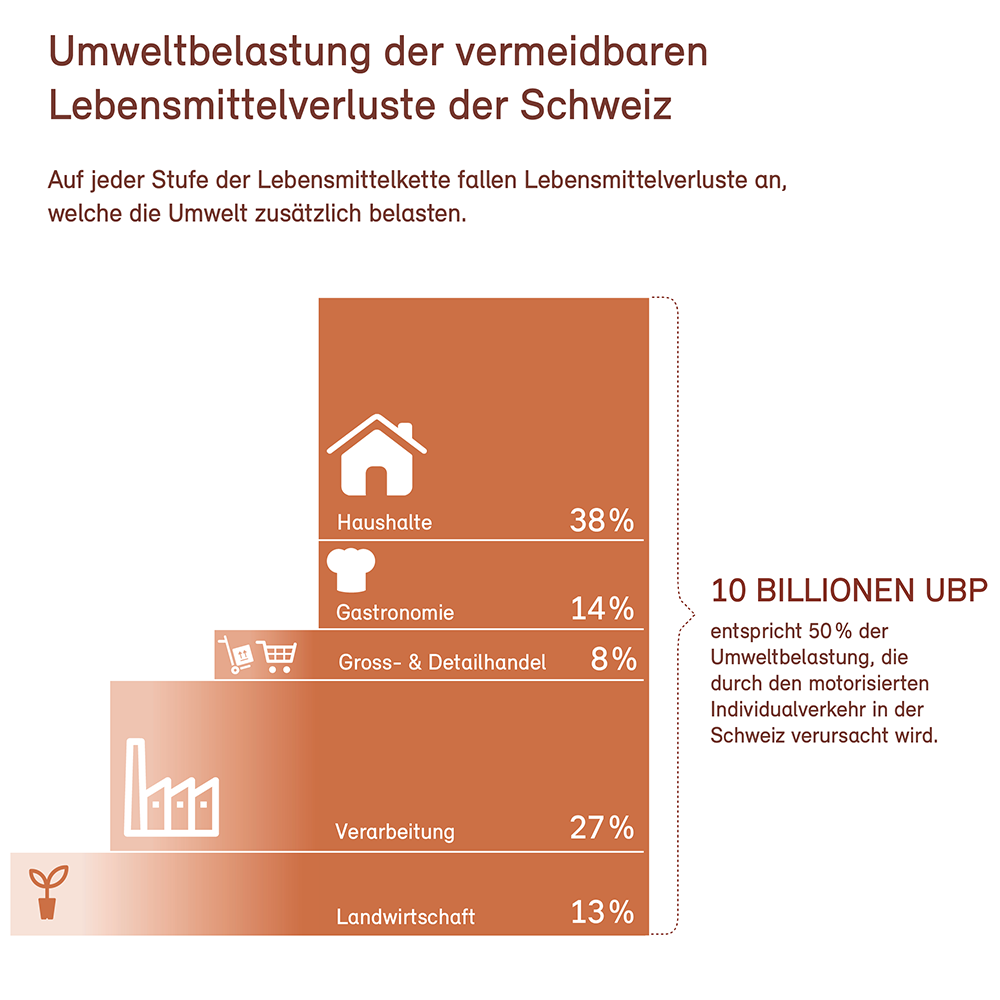

Lebensmittelabfälle

Aus ökologischen und sozialen Gründen ist es sinnvoller, Lebensmittelabfälle zu vermeiden. Ist dies ausnahmsweise
nicht möglich, empfehlen sich in dieser Reihenfolge das Verschenken von nicht benötigten
Nahrungsmitteln, die Verfütterung an Tiere, das Vergären zur Biogasproduktion, die Kompostierung
und erst zuletzt die Kehrichtverbrennung. Wenn Lebensmittel hergestellt, aber nicht konsumiert werden,
führt dies zu unnötigen CO2-Emissionen, Biodiversitätsverlust sowie Land- und Wasserverbrauch.
25 Prozent der Umweltbelastung der Ernährung der Schweiz sind auf Food Waste (vermeidbare Lebensmittelverluste)
zurückzuführen. Dies entspricht etwa der halben Umweltbelastung des motorisierten Individualverkehrs
der Schweiz.
Das Bild zeigt die Umweltbelastung der Lebensmittelverluste entlang der Schweizer Lebensmittelwertschöpfungskette in Billionen Umweltbelastungspunkten (UBP). Darin berücksichtigt sind die Verluste in den ausländischen Lieferketten von in der Schweiz konsumierten Lebensmitteln (Konsumperspektive). Die Prozentwerte zeigen die Beiträge der einzelnen Stufen der Lebensmittelkette auf.
Quelle: bafu.admin.ch
Privathaushalte in der Pflicht
In der Schweiz tragen die Privathaushalte mit einem Anteil von 45 % die Hauptverantwortung für die Verschwendung von
Lebensmitteln.
«Täglich gelangen pro Person beachtliche Mengen einer Mahlzeit in den Müll», sagt Martina
Blaser. «Dies belastet nicht nur die Umwelt, sondern auch das Haushaltsbudget, denn bei durchschnittlichen
Jahreskosten von rund 500 CHF pro Kopf für weggeworfene Nahrungsmittel entstehen hier Mehrkosten
in Milliardenhöhe.» Mit einfachen Massnahmen wiegezielten Einkaufslisten, der optimalen Lagerung
von Lebensmitteln und einer durchdachten Verwertung der Resten liessen sich die entsprechenden Abfallmengen
bereits deutlich reduzieren.
Quelle: bafu.admin.ch